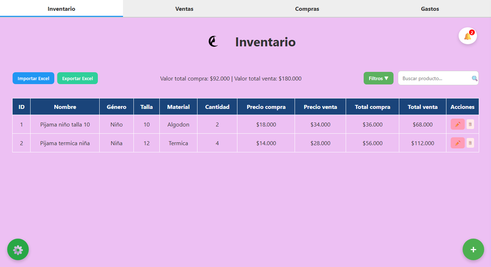
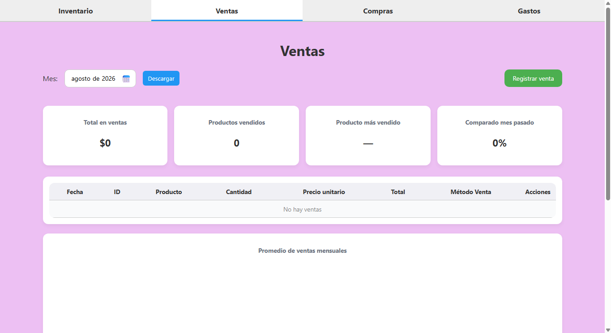
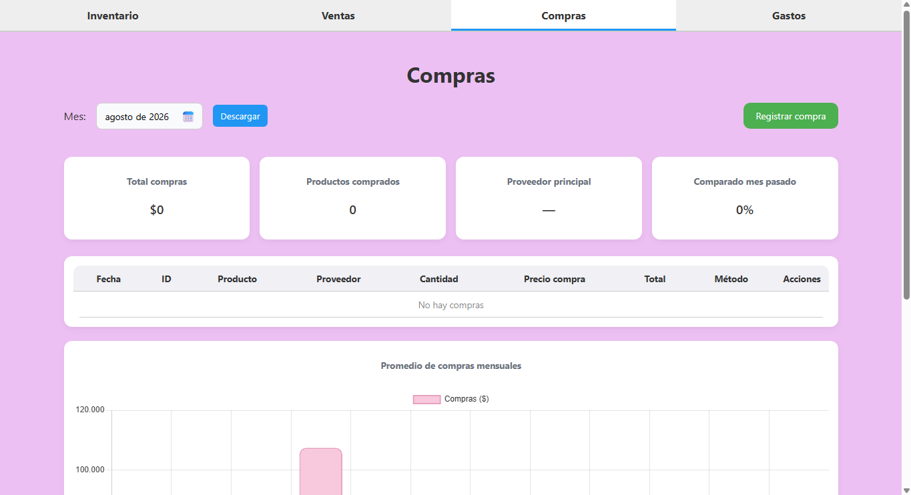
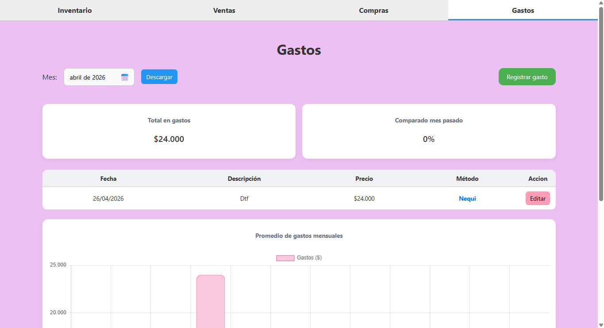
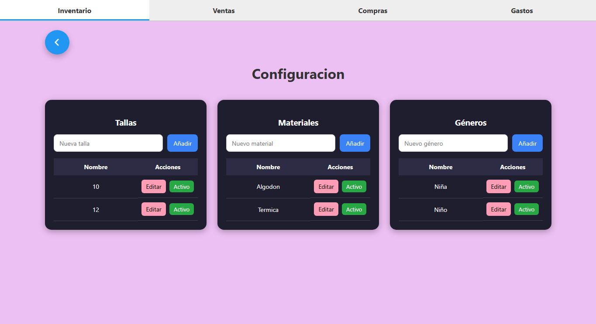

Gestión de productos
Registro, consulta, edición y administración de los productos del inventario.
PROYECTO
Aplicación desarrollada para gestionar de manera organizada productos, compras, ventas y gastos, centralizando la información y facilitando el control del inventario.

DESCRIPCIÓN
Este proyecto consiste en una aplicación de gestión de inventario diseñada para centralizar y organizar diferentes procesos relacionados con el manejo de productos.
El sistema permite administrar información de productos y controlar operaciones como compras, ventas y gastos desde una misma aplicación.
El proyecto fue desarrollado buscando crear una solución funcional, organizada y fácil de utilizar, aplicando diferentes tecnologías de desarrollo de software.
Facilitar la administración del inventario y mantener la información organizada para mejorar el control de las operaciones.
FUNCIONALIDADES
Registro, consulta, edición y administración de los productos del inventario.
Registro y seguimiento de compras y de los productos asociados a cada operación.
Gestión de ventas y control de los productos involucrados en cada operación.
Registro y organización de los gastos asociados a la operación.
Posibilidad de exportar información para facilitar su consulta y manejo.
Administración de diferentes parámetros utilizados por el sistema.
VISUAL
Algunas capturas de las diferentes funcionalidades y pantallas del sistema.




DEMOSTRACIÓN
Una demostración del funcionamiento y las principales características del sistema.
DESARROLLO
Lógica y desarrollo principal de la aplicación.
Backend y comunicación entre la aplicación y los datos.
Gestión y almacenamiento de la información.
Aplicación de escritorio e integración de la interfaz.
Estructura y diseño de la interfaz.
Interactividad y comportamiento de la interfaz.